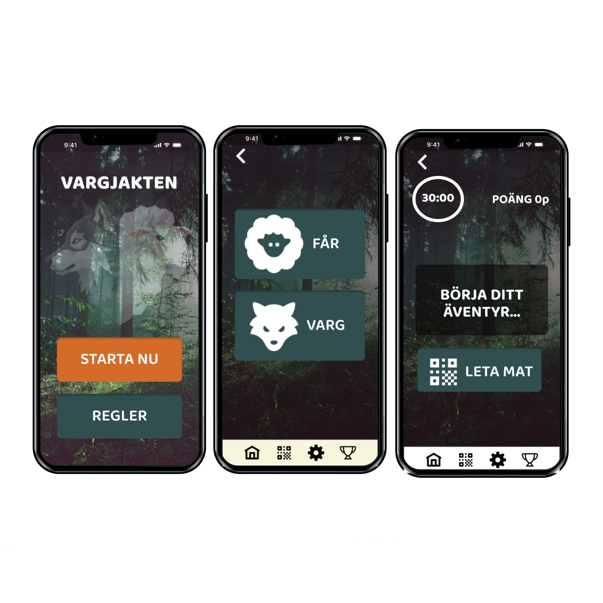
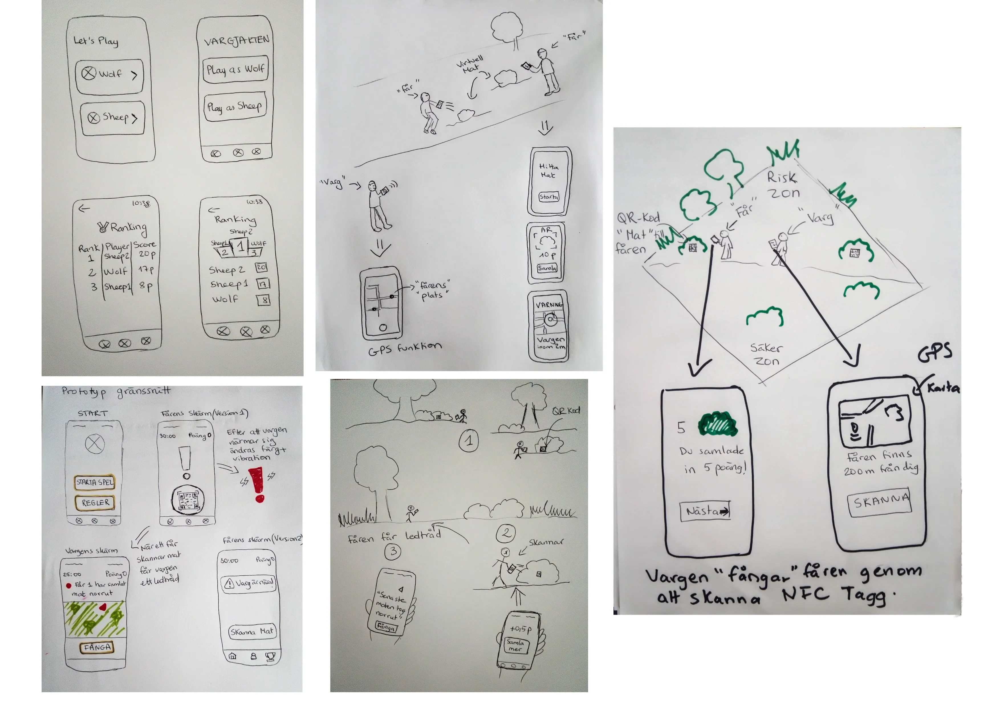
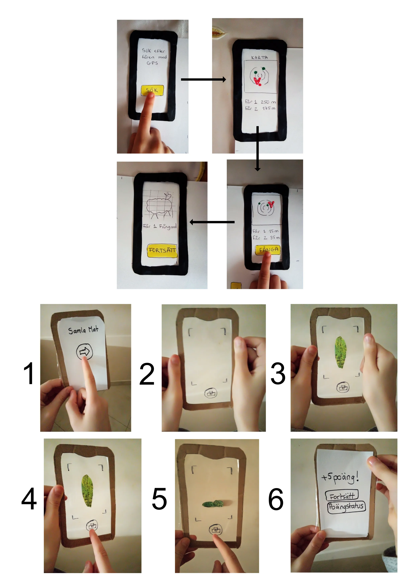
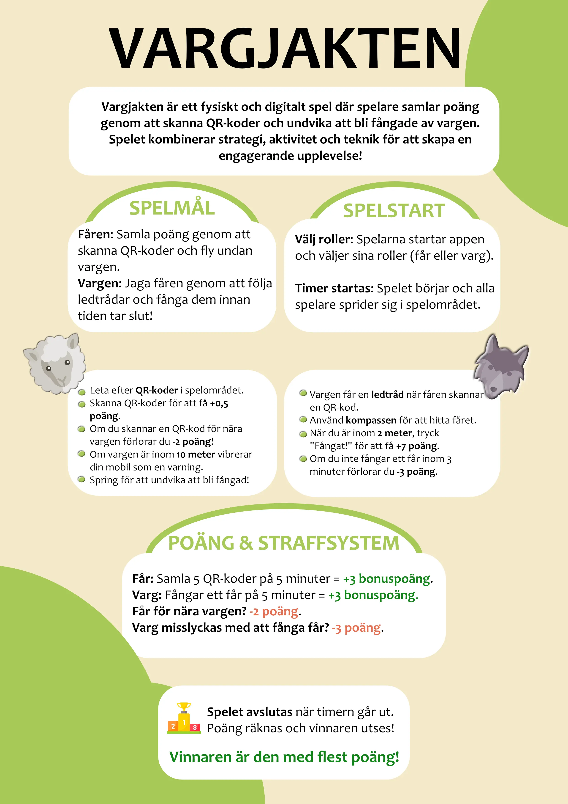
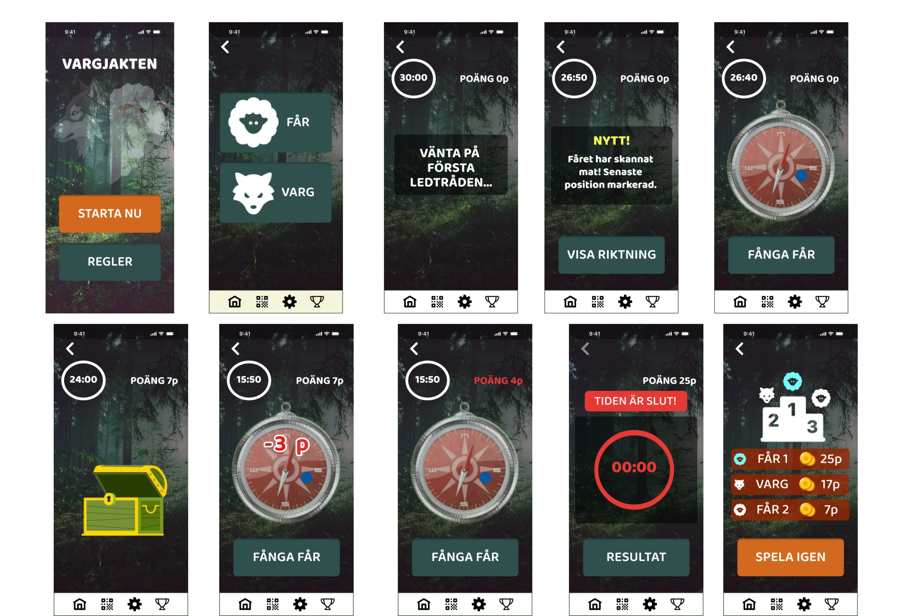
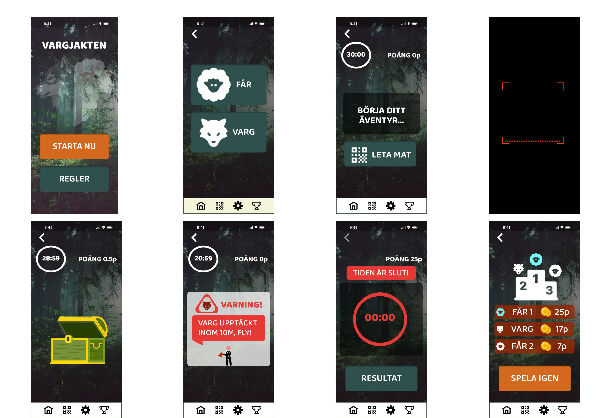

Digital Play and Game Design Project
- Digital Technology for Children's Play
- Addressing Screen Time Concerns
- UX Design and Prototyping
- Exploration of Sensors and Voice Interfaces
- Critiques
- Physical Activity and Social Interaction
- User Testing and Positive Feedback
- Experience Prototyping
- Heuristic Evaluation
- Post Mortem Analysis
- Participatory Design

Background and Goals
The project addresses the concerns about decreasing physical play and increasing screen time in children's lives. It sought to explore how technology can be a facilitator for play, rather than a replacement for it.
- Focused on designing digital artifacts to engage and socialize children.
- Explored the use of smartphone technology (sensors, voice, etc.) for limited-screen interaction.
- Employed "Research through Design" to inform the design process.
My Role
In this project, my responsibilities included:
- Analyzing existing games and play activities.
- Developing design concepts for digital play experiences.
- Prototyping and testing interaction methods.
- Documenting the design process and insights.
- Collaborating with the design team.
Design Process
Exploration and Ideation
The project began with an analysis of existing play activities and games to understand the elements that contribute to engagement and social interaction. This informed the generation of initial design concepts.

Early sketches exploring different game ideas.
Prototyping and Iteration
The design concepts were then prototyped and tested. This iterative process involved refining the designs based on feedback and exploring different interaction methods.

Prorotypes that tests AR function on the game.
Technology Exploration
A key aspect of the project was exploring how smartphone technology could be used to enhance play without relying heavily on the screen. This involved investigating features like sensors and voice interfaces.
Design Solution
My design solution, 'Vargjakten,' is a game that uses a smartphone app to guide the player who is the wolf to hunt down other players (Sheeps). The app provides clues, challenges, and rewards, encouraging players to explore their surroundings and collaborate with each other. The focus is on physical activity and social interaction, with limited on-screen time.

Game Instruction Flyer

High Fidelity Game App Wireframes (Wolfs perspective).

High Fidelity Game App Wireframes (Sheeps perspective).
Results and Learnings
The user testing indicated that the 'Vargjakten' game successfully motivated children to engage in physical activity and social interaction. Players reported enjoying the collaborative aspects of the game and the sense of adventure. The use of haptic and sound feedback enhanced the play experience.
Explore More
For a more in-depth look at the design process (from start to video presentation of the game idea) and additional materials, please visit my Padlet:
Pervasive game -Preework Pervasive game -Game presentationFigma Prototype
You can test the interactive Figma prototype here:
Interactive Figma Prototype